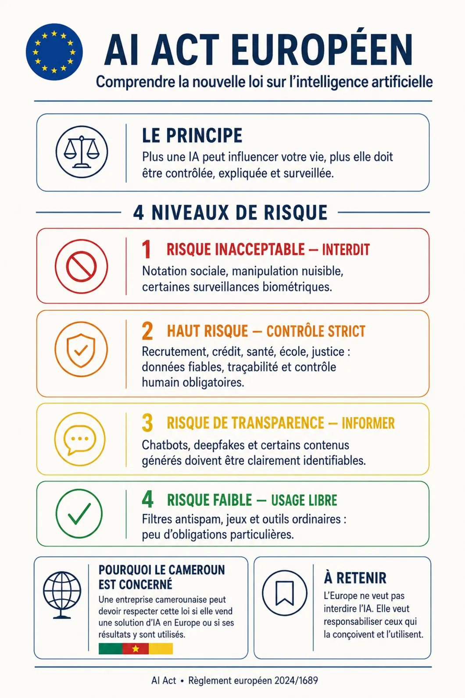

L'Europe entre dans l'ère de la régulation de l'intelligence artificielle. Et le Cameroun devrait s'y intéresser.
Ce que l'AI Act impose — et ce que son entrée en vigueur révèle de notre propre retard.

Nous ne devons pas seulement apprendre à utiliser l'intelligence artificielle. Nous devons aussi apprendre à la gouverner.
Depuis le 2 août 2026, l'Union européenne a commencé à appliquer et à faire respecter l'essentiel de son AI Act, le premier grand cadre juridique général consacré à l'intelligence artificielle.
L'Europe classe donc les systèmes d'IA selon quatre niveaux de risque.
1. Les usages jugés inacceptables
Certaines pratiques sont interdites, notamment :
- la notation sociale des citoyens ;
- l'exploitation des personnes vulnérables ;
- certaines formes de manipulation comportementale ;
- la collecte massive d'images faciales sur Internet pour créer des bases de reconnaissance ;
- certaines formes de police prédictive ;
- la reconnaissance des émotions dans les écoles et sur les lieux de travail, sauf exceptions précises.
2. Les intelligences artificielles à haut risque
Il s'agit des systèmes utilisés dans des domaines pouvant profondément modifier la vie d'une personne :
- recrutement professionnel ;
- admission scolaire ;
- attribution d'un crédit ;
- accès aux prestations sociales ;
- santé ;
- justice ;
- immigration ;
- infrastructures critiques.
Une entreprise ou une administration ne pourra donc plus simplement répondre : « Votre demande a été rejetée par l'algorithme. »
Ces systèmes devront respecter des exigences de qualité des données, de traçabilité, de cybersécurité, de supervision humaine et d'explication des décisions.
L'application complète de ces obligations a cependant été reportée : décembre 2027 pour plusieurs domaines sensibles et août 2028 pour certaines IA intégrées à des produits réglementés.
3. L'obligation de transparence
C'est probablement la partie que les internautes camerounais remarqueront le plus rapidement.
Depuis le 2 août 2026, certains systèmes doivent permettre aux utilisateurs de savoir :
- qu'ils dialoguent avec une intelligence artificielle ;
- qu'une image, une vidéo ou un contenu audio a été généré ou manipulé par IA ;
- qu'ils sont exposés à un deepfake ;
- qu'un texte concernant un sujet d'intérêt public a été généré par IA sans véritable contrôle éditorial humain.
Les fournisseurs d'IA générative doivent également intégrer, lorsque cela est techniquement possible, des marquages permettant aux machines de détecter les contenus artificiels.
Cela ne signifie pas que toute image retouchée ou tout texte assisté par ChatGPT devra automatiquement porter une énorme étiquette « IA ». La loi prévoit des exceptions, notamment pour certaines œuvres artistiques, satiriques ou éditorialement contrôlées.
Mais le principe est désormais posé : l'utilisation de l'IA ne doit pas servir à tromper le public sur l'origine ou l'authenticité d'un contenu.
4. Le risque faible, laissé à l'usage libre
Le dernier niveau rassemble les outils ordinaires — filtres antispam, jeux, fonctions d'assistance courantes. Ils ne sont soumis à aucune obligation particulière : l'Europe ne cherche pas à encadrer l'IA en tant que telle, mais les usages qui engagent les droits des personnes.
Pourquoi cette loi concerne-t-elle le Cameroun ?
L'AI Act n'est évidemment pas une loi camerounaise. Un Camerounais utilisant une IA uniquement au Cameroun ne tombe pas automatiquement sous la juridiction européenne.
Cependant, une entreprise camerounaise peut être concernée si elle :
- commercialise une solution d'IA en Europe ;
- fournit un service numérique à une organisation européenne ;
- produit depuis le Cameroun des résultats d'IA destinés à être utilisés dans l'Union européenne.
C'est ce que l'on appelle parfois l'effet Bruxelles : grâce à la puissance de son marché, l'Europe parvient à transformer ses propres règles en normes internationales.
Une entreprise camerounaise souhaitant vendre en Europe devra donc progressivement apprendre à documenter ses modèles, sécuriser ses données, signaler les contenus artificiels et démontrer qu'une intervention humaine reste possible.
Nos administrations commencent à exploiter l'intelligence artificielle. Nos banques, assurances, médias, universités et entreprises feront bientôt de même. Pourtant, nous ne disposons toujours pas d'un véritable cadre national définissant :
- les usages interdits ;
- la responsabilité en cas d'erreur algorithmique ;
- la protection des données des Camerounais ;
- les règles applicables aux deepfakes politiques ;
- la place des langues africaines dans les modèles ;
- les conditions d'utilisation de l'IA dans l'administration publique ;
- les droits d'un citoyen confronté à une décision automatisée.
Le véritable danger
Le danger n'est donc pas seulement que l'intelligence artificielle échappe à tout contrôle.
Le véritable danger est que l'Afrique devienne consommatrice d'intelligences artificielles étrangères, formées avec des données étrangères et encadrées par des règles étrangères, sans jamais participer sérieusement à la définition de leurs valeurs, de leurs limites et de leurs priorités.
L'Europe vient de choisir son modèle. La question est désormais de savoir quand le Cameroun commencera à construire le sien.
Nous ne devons pas seulement apprendre à utiliser l'intelligence artificielle. Nous devons aussi apprendre à la gouverner.